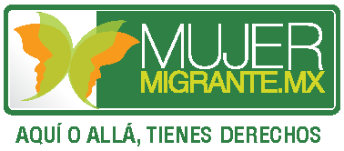

Guía de autoempleo

Fuentes
http://www.pepeytono.com.mx/mejora_tu_empresa/6_tips_para_hacer_crecer_una_pyme_sin_volverse_loco
http://www.cnnexpansion.com/emprendedores/2010/03/17/pyme-estrategia-crecimiento-expansion-eu
http://www.soyentrepreneur.com/27358-guia-para-hacer-tu-plan-de-negocios.html
http://www.soyentrepreneur.com/23744-tendencias-negocios-crowdsourcing.html
http://www.forbes.com.mx/los-trabajos-freelance-que-mas-crecen-y-mejor-pagan/
http://www.soyentrepreneur.com/28723-5-reglas-poderosas-para-mujeres-emprendedoras.html
http://www.soyentrepreneur.com/28771-10-pasos-para-abrir-tu-negocio.html
http://www.soyentrepreneur.com/28746-identifica-cual-es-el-mercado-perfecto.html
http://www.soyentrepreneur.com/28745-como-definir-una-idea-de-negocio.html
http://www.cepes-extremadura.org/economia-social/concepto-de-autoempleo
http://www.ipyme.org/es-ES/CPyme/Documents/NuevaDefinicionPyme.pdf
http://definicion.de/pyme/
http://www.condusef.gob.mx/index.php/empresario-pyme-como-usuarios-de-servicios-financieros/542-ide-que-tamano-es-una-pyme
http://www.inegi.org.mx/est/contenidos/espanol/proyectos/censos/ce2009/pdf/Mono_Micro_peque_mediana.pdf
http://www.conevyt.org.mx/
http://200.53.189.98/capacitacion/stps/index.php
http://www.condusef.gob.mx/index.php/instituciones-financieras/bancos/ahorro/557-diferencia-fundamental-ahorro-vs-inversion
http://www.condusef.gob.mx/index.php/empresario-pyme-como-usuarios-de-servicios-financieros/119-plan-de-negocios-y-como-hacerlo
http://revistadelconsumidor.gob.mx/?p=28838
https://www.empleo.gob.mx/swb/empleo/autoempleo
https://www.empleo.gob.mx/swb/empleo/credito_fonacot_para_formacion_y_capacitacion
https://www.empleo.gob.mx/swb/empleo/Tips_para_conseguir_empleo
http://www.pepeytono.com.mx/mejora_tu_empresa/10_consejos_para_pymes_en_redes_sociales